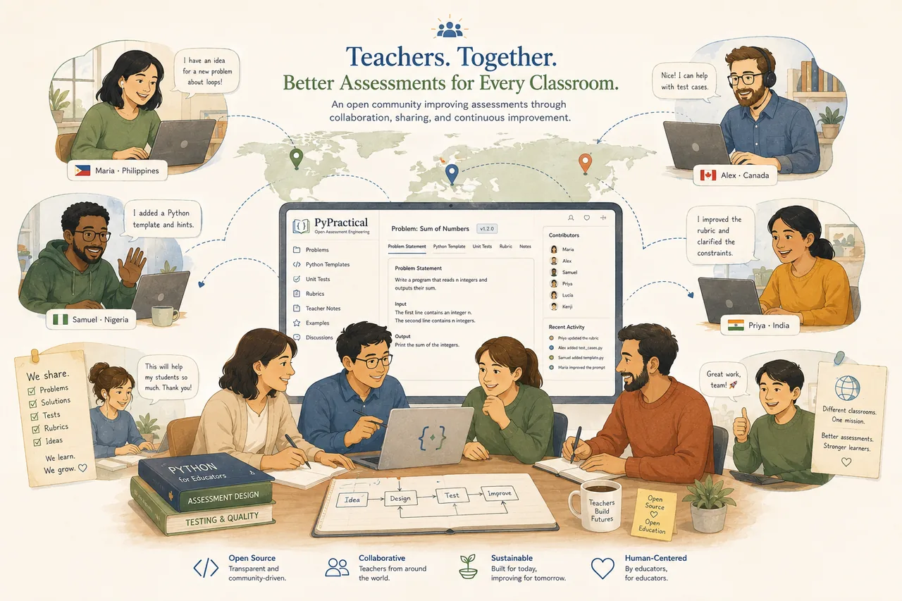

Students before technology
Tools serve learning — never the other way around.
PyPractical is openly licensed and made for adaptation. Run an assessment in your classroom today — and if you improve it, somewhere another teacher is working late who would benefit.

Every assessment ships with a unittest suite. Drop in a student's solution (or your own), run the tests, and read the score.
Use the GitHub link in the navbar.
Each one has starter.py, solution.py, and tests.py.
python -m unittest tests.py -v
Passing tests ÷ total tests = the percentage score.
# clone the repository (use the GitHub link above)
git clone
cd pypractical/Family-01-Minimum-Cost/01-Parking-Garage
# grade a solution: replace starter.py contents, then run:
python -m unittest tests.py -v
# example output
# test_daily_report_basic ... ok
# test_daily_report_boundary ... ok
# ...
# score = passing_tests / total_tests * 100 “If you improve an assessment, please consider sharing it back. Somewhere, another teacher is working late, trying to create tomorrow's practical.” — the Educators' Pledge
It isn't a legal requirement — the license already grants every freedom. It's a cultural one: a request to make the next teacher's night a little easier.
Every contribution is guided by one question: “Would we confidently use this in our own classroom tomorrow?”
Tools serve learning — never the other way around.
Reduce workload without reducing craft.
Readable beats impressive, every time.
Errors become improvements, not embarrassments.
Every classroom is a source of lessons.
If we wouldn't use it ourselves, it isn't ready.
PyPractical is free to use, adapt, and redistribute:
Problems, notes, and all written materials — share-alike with attribution.
Starter code, solutions, and test suites — permissive and commercial-friendly.
Follow the workflow, respect the standards, and share your assessment back to the community.